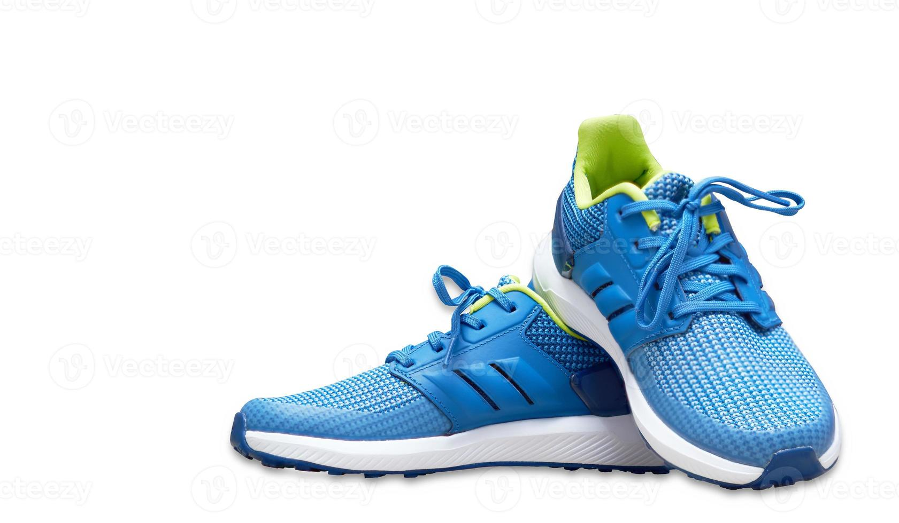

Primera Noticia: Tecnología en 2024
La tecnología en 2024 avanza hacia dispositivos más inteligentes, sostenibles y accesibles. Las laptops modernas incluyen procesadores avanzados, mayor autonomía y pantallas de alta definición.
Tecnologías como sensores en zapatillas deportivas permiten monitorear la actividad física y prevenir lesiones.